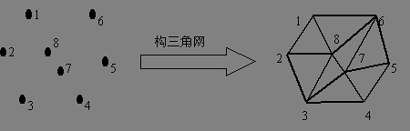
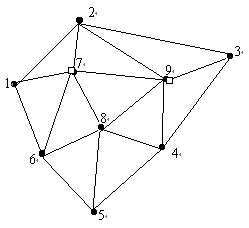

生成算法_files/new_menu.gif)
(Voronoi图)生成算法
泰森多边形(Voronoi图)生成算法
一、文档目的
本文描述了在geomodel模块中，生成泰森多边形所使用的算法。
二、概述
GIS和地理分析中经常采用泰森多边形进行快速插值，和分析地理实体的影响区域，是解决邻接度问题的又一常用工具。
荷兰气候学家A·H·Thiessen提出了一种根据离散分布的气象站的降雨量来计算平均降雨量的方法，即将所有相邻气象站连成三角形，作这些三角形各边的垂直平分线，于是每个气象站周围的若干垂直平分线便围成一个多边形。用这个多边形内所包含的一个唯一气象站的降雨强度来表示这个多边形区域内的降雨强度，并称这个多边形为泰森多边形。如图1，其中虚线构成的多边形就是泰森多边形。泰森多边形每个顶点是每个三角形的外接圆圆心。泰森多边形也称为Voronoi图，或dirichlet图。
生成算法_files/p24113859.jpg) |
图1 泰森多边形
泰森多边形的特性是：
每个泰森多边形内仅含有一个离散点数据
泰森多边形内的点到相应离散点的距离最近
位于泰森多边形边上的点到其两边的离散点的距离相等
泰森多边形可用于定性分析、统计分析、邻近分析等。例如，可以用离散点的性质来描述泰森多边形区域的性质；可用离散点的数据来计算泰森多边形区域的数据；判断一个离散点与其它哪些离散点相邻时，可根据泰森多边形直接得出，且若泰森多边形是n边形，则就与n个离散点相邻；当某一数据点落入某一泰森多边形中时，它与相应的离散点最邻近，无需计算距离。
在泰森多边形的构建中，首先要将离散点构成三角网。这种三角网称为Delaunay三角网。
三、Delaulay三角形的构建
Delaunay三角网的构建也称为不规则三角网的构建，就是由离散数据点构建三角网，如图2，即确定哪三个数据点构成一个三角形，也称为自动联接三角网。即对于平面上n个离散点，其平面坐标为(xi，yi)，i＝1，2，…，n，将其中相近的三点构成最佳三角形，使每个离散点都成为三角形的顶点。
|  |
图2 Delaunay三角网
自动联接三角网的结果为所有三角形的三个顶点的标号，如:1,2,8；2,8,3；3,8,7；……
为了获得最佳三角形，在构三角网时，应尽可能使三角形的三内角均成锐角，即符合Delaunay三角形产生的准则：
1、任何一个Delaunay三角形的外接圆内不能包含任何其它离散点。
2、相邻两个Delaunay三角形构成凸四边形，在交换凸四边形的对角线之后，六个内角的最小者不再增大。该性质即为最小角最大准则。
生成算法_files/p24113933.jpg) |
图3 凸包
下面介绍Tsai（1993）提出的在n维欧拉空间中构造Delaunay三角形的通用算法---凸包插值算法。
（一）、凸包生成
1、求出点集中满足min(x-y)、min(x+y)、max(x-y)、max(x+y)的四个点，并按逆时针方向组成一个点的链表。这4个点是离散点中与包含离散点的外接矩形的4个角点最近的点。这4个点构成的多边形作为初始凸包。
2、对于每个凸包上的点I，设它的后续点为J，计算矢量线段IJ右侧的所有点到IJ的距离，求出距离最大的点K。
3、将K插入I、J之间，并将K赋给J。
4、重复2、3步，直到点集中没有在线段IJ右侧的点为止。
5、将J赋给I，J取其后续点，重复2、3、4步。
6、当凸包中任意相邻两点连线的右侧不存在离散点时，结束点集凸包求取过程。
完成这一步后，形成了包含所有离散点的多边形（凸包），如图3所示。
（二）、环切边界法凸包三角剖分
在凸包链表中每次寻找一个由相邻两条凸包边组成的三角形，在该三角形的内部和边界上都不包含凸包上的任何其它点。将这个点去掉后得到新的凸包链表。重复这个过程，直到凸包链表中只剩三个离散点为止。将凸包链表中的最后三个离散点构成一个三角形，结束凸包三角剖分过程。
生成算法_files/p24113941.jpg) |
图4 环切边界法凸包三角剖分
完成这一步后，将凸包中的点构成了若干Delaunay三角形，如图4所示。
（三）、离散点内插
在对凸包进行三角剖分之后，不在凸包上的其余离散点，可采用逐点内插的方法进行剖分。基本过程为：
1、选择一个尚未构成三角形的离散点
2、在已经生成的三角形中，找出该离散点的三角形(离散点在该三角形在内部或者在该三角形的边上)
3、如果离散点在三角形的内部，则将该三角形以及三角形的边删除，然后将三个顶点以及离散点分别连接，形成三个新的三角形。如果离散点在三角形的边上，记录点所在的边E，根据拓扑关系，找出该边的左右相邻三角形T1，T2，添加四条新边和四个新三角形NT，删除T1，T2以及边E。
对于新生成的三角形，需要挨个对其边进行空外接圆检测。具体做法为：对于新生成的三角形的边E，找出该边相邻的两个三角形，判断该边一侧的对角的顶点是否位于另外一个三角形的外接圆的里面。如果是，则将边E删除，再将两个对角连接起来，形成两个新的三角形。对于新三角形的边，同样需要进行空外接圆检测，如此继续进行，直到所有新生成的三角形都通过空外接圆检测为止。
4、重复1、2、3，直到所有非凸壳离散点都插入完为止。完成这一步后，就完成了Delaunay三角网的构建，如图5所示。
|  |
图5 离散点内插
四、泰森多边形的建立步骤
建立泰森多边形算法的关键是对离散数据点合理地连成三角网，即构建Delaunay三角网。建立泰森多边形的步骤为：
1、离散点自动构建三角网，即构建Delaunay三角网。对离散点和形成的三角形编号，记录每个三角形是由哪三个离散点构成的。
2、找出与每个离散点相邻的所有三角形的编号，并记录下来。这只要在已构建的三角网中找出具有一个相同顶点的所有三角形即可。
图6 泰森多边形的建立
3、对与每个离散点相邻的三角形按顺时针或逆时针方向排序，以便下一步连接生成泰森多边形。排序的方法可如图6所示。设离散点为o。找出以o为顶点的一个三角形，设为A；取三角形A除o以外的另一顶点，设为a，则另一个顶点也可找出，即为f；则下一个三角形必然是以of为边的，即为三角形F；三角形F的另一顶点为e，则下一三角形是以oe为边的；如此重复进行，直到回到oa边。
4、计算每个三角形的外接圆圆心，并记录之。
5、根据每个离散点的相邻三角形，连接这些相邻三角形的外接圆圆心，即得到泰森多边形。对于三角网边缘的泰森多边形，可作垂直平分线与图廓相交，与图廓一起构成泰森多边形。
> 我来回应